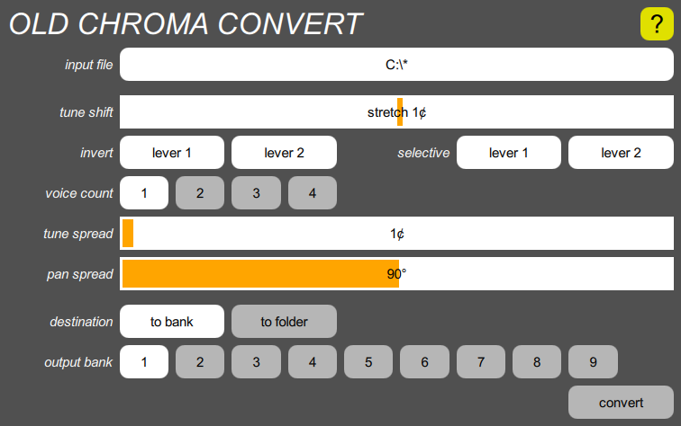
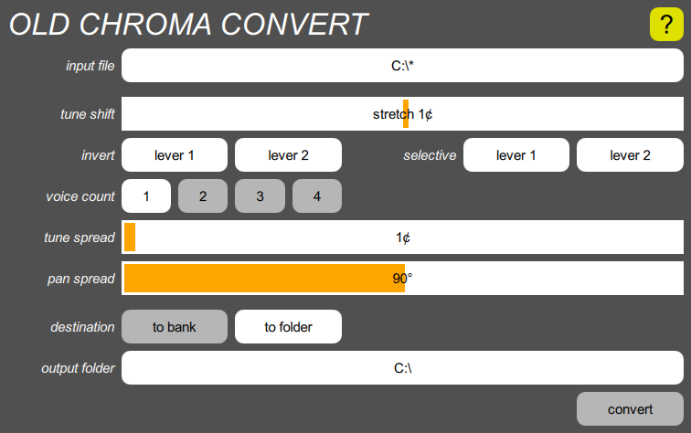

Old Chroma convert
Once you’ve imported old Chroma programs into the Syntech Sysex format, or if you already have Chroma files in that format and would like to use them in the Digital Chroma, you can use this tool to convert them to the Digital Chroma’s format. Since each Sysex file contains up to 50 programs, the conversion produces fifty separate Digital Chroma program files.
The Digital Chroma has almost twice as many parameters as the old Chroma, and most of the new ones are set to compatible default values. A few, however, are presented in this tool, because you may not wish to rely on the default values. They include:
| tune shift | Positive settings stretch the tuning, making the high notes sharp and the low notes flat. Negative settings introduce increasing amounts of randomization into the tuning. If you like the old Chroma’s sour tuning, try something like “random 5¢”; if you just want it to sound less dry, try “stretch 5¢”. | |
| invert | The preference in the Chroma factory sounds was for pulling lever 2 to raise the pitch, but the levers were wired up so that pushing the levers produced positive modulation values. Therefore, most of the programs were configured so that the lever 2 modulation depth was a negative number. If your programs are mostly set up like this, then you should use the “inverted” choice, at least for lever 2, which causes these modulation depths to be made positive. This way, the results will agree with your global invert parameter settings, instead of contradicting them. | |
| selective | These choose whether the levers are configured in normal or selective mode. The latter is recommended, since this is a useful feature, and it is rarely important that a lever not be selective. | |
| voice count | Since the Digital Chroma has so many voices, it’s often worth spending them on fattening the sound, by setting the voice count parameter to something greater than 1. | |
| pan spread | If the voice count is greater than 1, this parameter spreads out the voices assigned to each note in the stereo field. The default value of 90° is a good choice, although 180° results in less obvious beating, because the mixing takes place more in the air. | |
| tune spread | If the voice count is greater than 1, this parameter should be used to detune the voices a little. Something larger than the default value of 1¢ is probably optimum, perhaps 5¢. |
Since the conversion is a quick operation, you can try a conversion, play some of the resulting programs while tinkering with the parameters to find the best conversion settings, and then redo the conversion. Of course, all programs will end up with the same settings, so you should choose the most generally useful settings, to minimize the number of programs you’ll want to edit individually.
To do the conversion, tap the input file button, navigate to the folder containing the Syntech Sysex file, and select the appropriate file. After setting the various parameters, you can choose between two destinations for the results:
Converting to a Digital Chroma bank

Tapping the “to bank” button presents you with nine numbered bank buttons. Choose the bank you wish to overwrite, and then tap “convert”. As soon as the conversion is complete, you can begin playing on those programs.
This overwrites an entire bank of programs. However, all changes to programs stored inside the Chroma are protected by the Undo mechanism, so you can undo the conversion operation if you write to the wrong bank.
Converting to a folder

Tapping the “to folder” button presents you with a button that lets you choose a folder on the computer. The conversion creates fifty files in that folder, called “01.chr” through “50.chr”. You can later copy them into the Digital Chroma using the Backup & restore tool.
If you convert into an existing folder, any old files of those names are overwritten. Since these are not inside the Digital Chroma, they are not protected by the Undo mechanism.
Program metadata
This tool provides one more feature. If you want to give all your programs names, you can use a plain text editor (e.g., Notepad in Windows, TextEdit on the Mac) to prepare a file with the names, one to a line, and store it in the same folder as the Syntech Sysex file, with the same name but with the extension “.txt”. The conversion will use the text in line 1 for the name of program 1, and so on. If a line is empty, that program won’t be named. If there are too few lines, the trailing programs won’t be named. If there are too many lines, the excess will be ignored. Because of the limits of the Digital Chroma’s display, you can only use basic ASCII characters.
If you screw up the names, it’s easy to tweak the text file and re-run the conversion, since it is a quick operation.
No comparable function is provided for descriptions. Those must be entered manually after the conversion, using the Program popup on each program.
The timestamp assigned to each program reflects when the conversion took place. All programs will have slightly different timestamps.
Errors
Normally, after a conversion, a light green box saying “success” appears to the left of the “convert” button for a second. If any error occurs, a pink box with an error message appears instead. In this case, the button changes to “dismiss”, and you must tap it to dismiss the message before you can retry the operation.